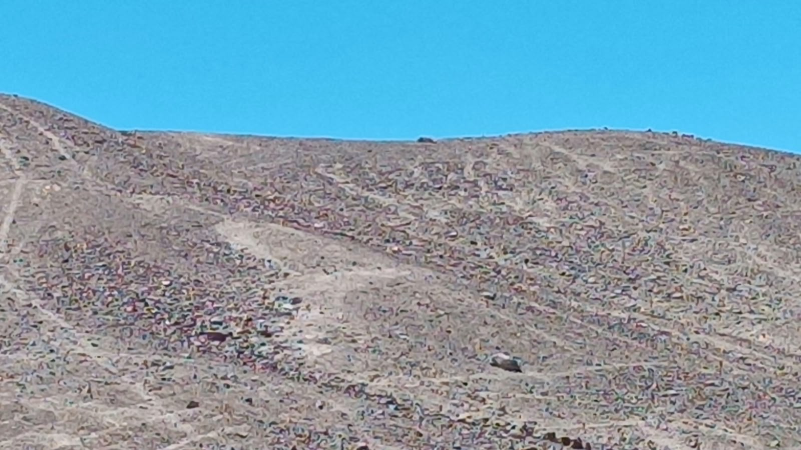
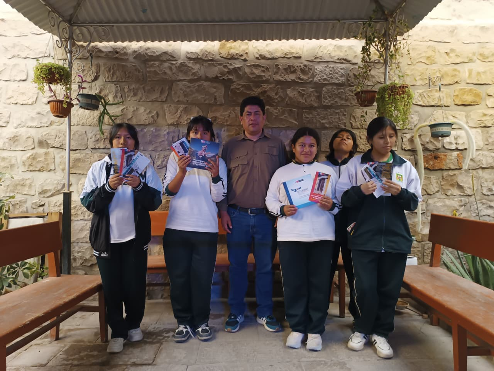
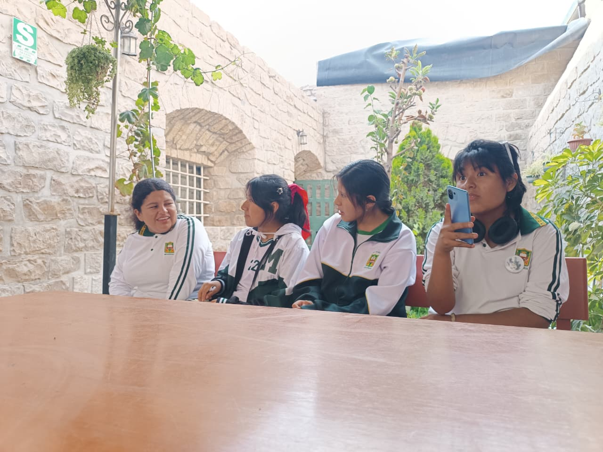

SECTOR A
Presenta figuras pequeñas de camélidos y diseños geométricos, ubicados sobre una ladera poco pronunciada.

«Descubriendo las huellas de nuestro pasado». Un viaje para conocer, valorar y proteger uno de los tesoros arqueológicos de nuestra región.
CONOCE NUESTRA AVENTURA →Todo comenzó con nuestro proyecto «Valoramos y salvaguardamos nuestra identidad: Embajadores del Patrimonio Cultural de Moquegua».
Como estudiantes del 5.º B de secundaria de la I.E. Coronel Manuel Camilo de la Torre, junto a nuestro profesor Javier Choque, buscamos conocer aquellos lugares de nuestra región que, a pesar de su valor histórico, no reciben suficiente reconocimiento.
Para comenzar nuestra investigación, acudimos al Ministerio de Cultura de Moquegua, donde recibimos orientación y descubrimos los Geoglifos del Santuario.

Somos estudiantes comprometidos con la investigación, difusión y protección de nuestra identidad cultural.
Un conjunto de representaciones arqueológicas que forman parte de la riqueza histórica de Moquegua.
Están ubicados en el sector Tres Quebradas, provincia de Mariscal Nieto, región Moquegua.
Este conjunto destaca por sus representaciones de camélidos y diseños realizados directamente sobre la superficie del terreno.
Son figuras o diseños de grandes dimensiones elaborados sobre el terreno mediante la modificación de su superficie.
Video principal · Geoglifos del Santuario, sector Tres Quebradas
Presenta figuras pequeñas de camélidos y diseños geométricos, ubicados sobre una ladera poco pronunciada.
Contiene figuras de camélidos de mayor tamaño y está asociado al sitio arqueológico M 72 A, donde existen evidencias de habitaciones relacionadas con la cultura Tiwanaku.
Entre las técnicas utilizadas para crear geoglifos se encuentran la técnica extractiva o de raspado, que retira materiales de la superficie, y la técnica aditiva, que coloca materiales para formar el diseño. La ficha histórica consultada para esta investigación registra figuras de camélidos realizadas mediante la técnica extractiva.
La intervención humana y la habilitación de terrenos agrícolas pueden afectar estas figuras. También es importante prevenir el tránsito inadecuado, la contaminación y el huaqueo, promoviendo visitas responsables y el respeto por el patrimonio.
Su estado de conservación ha sido descrito como regular debido a la intervención humana y a los intentos de habilitar terrenos para actividades agrícolas.
Una ficha de inventario incluida en una tesis de la Universidad Católica de Santa María, publicada en 2013, registra tres figuras de camélidos de grandes dimensiones elaboradas mediante la técnica extractiva o de raspado.
Estas evidencias permiten conocer mejor el lugar, aunque su significado necesita continuar siendo estudiado.
Responde estas preguntas sobre los Geoglifos del Santuario. ¡Al final verás tu resultado!
Una experiencia que nos permitió acercarnos a nuestra historia y comprender por qué debemos protegerla.
Llegar hasta este lugar fue mucho más que una visita. Fue una oportunidad para descubrir, aprender y compartir como compañeros. Entre paisajes, curiosidad y nuevos conocimientos, vivimos una experiencia inolvidable.
01 · NUESTRO RECORRIDO
02 · TRES QUEBRADAS
03 · NUESTRO GRUPO

04 · EXPLORANDO EL SECTOR
No quisimos quedarnos solo con lo aprendido. Queríamos que más personas conocieran este patrimonio.
Realizamos un collage informativo público en nuestro colegio y compartimos nuestra aventura en redes sociales para despertar el interés por nuestra cultura.

Conoce nuestra experiencia y descubre el trabajo que realizamos.
VER PUBLICACIÓN →¡Acompáñanos en nuestra aventura! Mira nuestro recorrido y descubre este tesoro de Moquegua.
VER PUBLICACIÓN →Nuestro trabajo incluye un documental al que se podrá acceder mediante un código QR. Así podremos compartir nuestra investigación con más estudiantes y visitantes.

Esta aventura nos enseñó que no necesitamos ir lejos
para encontrar lugares llenos de historia. Muchas veces,
los mayores tesoros están en nuestra propia región,
esperando ser descubiertos.
Invitamos a todos los moqueguanos a conocer, valorar
y proteger los Geoglifos del Santuario y los demás
espacios culturales que forman parte de nuestra identidad.
No dejemos que nuestra historia quede en el olvido.
Conocer nuestro patrimonio es el primer paso para protegerlo.